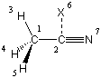

#P HF/6-311+G(d,p) scf=(conventional,conver=8) HF/6-311+G(d,p)//HF/6-31G(d) sp acetonitrile (C3v) 0 1 C1 C2 1 r2 H3 1 r3 2 a3 H4 1 r3 2 a3 3 120.0 H5 1 r3 2 a3 3 -120.0 X6 2 1.0 1 90.0 3 0.0 N7 2 r7 6 90.0 1 180.0 r2=1.46783503 r3=1.08212473 r7=1.13472349 a3=109.83442501 |  |
| algorithm | HF/6-311+G(d,p)- basis | HF/6-311++G(2d,p)- basis | 6-311++G(3df,3pd)- basis |
|---|---|---|---|
| conventional | 6.5 | 12.1 | 80.8 |
| direct | 14.3 | 29.4 | 183.8 |
| incore | 5.3 | 10.9 | - |
| %mem= [MW] | 6 | 8 | 16 | 32 | 64 | 96 |
| CPU [s] | 6.5 | 6.6 | 7.4 | 8.8 | 11.6 | 14.6 |
|
last changes: 22.11.2004, HZ questions & comments to: zipse@cup.uni-muenchen.de